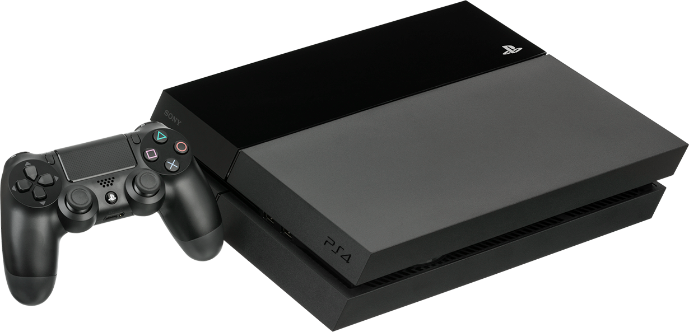

Durante mayo de 1972, la empresa Magnavox lanza al mercado la primer consola de videojuegos de la historia, la famosa Oddyssey creada por Ralph Baer siendo un éxito de ventas sólo limitado por el hecho de que Magnavox las vendía únicamente en sus tiendas, así y todo las ventas superaron las 100 mil unidades en el primer año. En septiembre del mismo año, Atari puso el primer Pong en el bar de Andy Capp's Tavern de california, después de haberse "inspirado" en el proyecto de Ralph Baer y posteriormente crea su primer consola pong para el mercado doméstico durante 1975 con la cual vendió más de 55 mil unidades. Durante los años 60s, la empresa Panoramic era una reconocida fábrica de equipos de audio, combinados, y televisores. Se estima que durante 1973, decide agregar a su oferta de televisores un aparato de videojuego, inspirado en el diseño de Ralph Baer. Así nace el Telematch. Supongo que el nombre adoptado por el aparato está inspirado en un programa de TV (originario de alemania) del mismo nombre que tuvo gran éxito por esos tiempos.
La Atari 2600 es una videoconsola lanzada al mercado en septiembre de 1977 bajo el nombre de Atari VCS (Video Computer System), convirtiéndose en el primer sistema de videojuegos en tener gran éxito, e hizo popular los cartuchos intercambiables. En 1982, tras el lanzamiento de la Atari 5200, adoptó su nombre final basado en el número de catálogo que la identificaba (CX2600). Esta consola fue un gran éxito y logró que durante los años 1980 «Atari» fuese sinónimo de videojuegos. Se vendía acompañada de dos joysticks, dos controles tipo paddle y el juego Combat desde 1977 hasta 1983, después, se comercializó con dos controles, y con o sin cartucho de juegos dependiendo del paquete.
La ColecoVision es una consola de videojuegos de segunda generación lanzada al mercado estadounidense en agosto de 1982 por la empresa Coleco. La ColecoVision ofrecía para su tiempo gráficos y jugabilidad de calidad arcade, la capacidad de jugar con cartuchos de su principal competidora la Atari 2600, y medios para ampliar el hardware del sistema. La ColecoVision se lanza con un catálogo inicial de 12 juegos con otros 10 títulos programados a lo largo de 1982. En total, aproximadamente 100 títulos se lanzaron como cartuchos para la consola entre 1982 y 1984.
Commodore 64 (C64, CBM 64/CBM64, C=64,C-64, VIC-641) es una computadora doméstica de 8 bits desarrollada por Commodore International en agosto de 1982 a un precio inicial de 595 dólares. Sucede a la Commodore VIC-20 y a la Commodore MAX Machine, con 64 kilobytes (65 536 bytes) de RAM, con gráficos y sonido muy por encima de otros equipos contemporáneos.
En videojuegos, famiclona es un término usado para referirse a un clon de hardware de la Sistema de entretenimiento Nintendo (NES), conocido en Japón como la Computadora Familiar o Famicom. Están diseñados para replicar el funcionamiento y jugar juegos diseñados para NES y Famicom. Cientos de clones no autorizados y copias de juego sin licencia se han puesto a disposición desde el apogeo de la popularidad de NES a fines de la década de 1980.[cita necesaria] La tecnología empleada en tales clones ha evolucionado a lo largo de los años: mientras que los primeros clones presentan un placa de circuito impreso que contenga personal o de terceros circuitos integrados (IC), los clones más recientes (post-1996) utilizan diseños de un solo chip, con una costumbre ASIC que simula la funcionalidad del hardware original,[cita necesaria] y a menudo incluye uno o más juegos a bordo. La mayoría de los dispositivos se originan en China y Taiwán, y con menos frecuencia Corea del Sur. Fuera de China y Taiwán, están mayormente extendidos en todo mercados emergentes de países en desarrollo.
El Sega Génesis, también conocido como el Mega Drive[b] fuera de América del Norte, es un 16 Bits cuarta generación consola de videojuegos casera desarrollado y vendido por Sega. Fue la tercera consola de Sega y la sucesora de la Sistema Maestro. Sega lo lanzó en 1988 en Japón como Mega Drive, y en 1989 en América del Norte como el Génesis. En 1990, fue distribuido como el Mega Drive por Virgen Mastertronic en Europa, Ozisoft en Australasia, y Tecto en Brasil. En Corea del Sur, fue distribuido por Samsung Electrónica como el Super Gam*Boy y más tarde el Super Aladdin Boy.
El Sega Génesis, también conocido como el Mega Drive[b] fuera de América del Norte, es un 16 Bits cuarta generación consola de videojuegos casera desarrollado y vendido por Sega. Fue la tercera consola de Sega y la sucesora de la Sistema Maestro. Sega lo lanzó en 1988 en Japón como Mega Drive, y en 1989 en América del Norte como el Génesis. En 1990, fue distribuido como el Mega Drive por Virgen Mastertronic en Europa, Ozisoft en Australasia, y Tecto en Brasil. En Corea del Sur, fue distribuido por Samsung Electrónica como el Super Gam*Boy y más tarde el Super Aladdin Boy.
La Super Nintendo Entertainment System, conocida popularmente como la Super Nintendo, también llamada la Super Famicom (japonés: スーパーファミコン, Hepburn: Sūpā Famikon) en Japón7 (abreviada SFC) y la Hyundai Super Comboy (hangul: 현대 슈퍼 컴보이, romanización revisada: Hyeondae Syupeo Keomboi) en Corea del Sur,8 también nombrada oficialmente de forma abreviada como la Super NES o SNES en América9 y como la Super Nintendo en Europa,10 es la segunda videoconsola descontinuada de sobremesa de Nintendo y la sucesora de Nintendo Entertainment System (NES) en América y Europa. Mantuvo una gran rivalidad en todo el mundo con la Sega Mega Drive (o Sega Genesis) durante la era de 16 bits. Fue descontinuada en el año 1999 (2003 en Japón)11 y años más tarde, fue relanzada virtualmente a través de la Consola Virtual en la Wii en 2006, Wii U en 2013, Nintendo 3DS (solo la versión New) en 2016 y Nintendo Switch en 2019 a través del servicio en línea Nintendo Switch Online.
Nintendo 64 (ニンテンドウ64?) es la cuarta videoconsola de sobremesa producida por Nintendo, desarrollada para suceder a la Super Nintendo. Fue la primera consola concebida para dar el salto del 2D al 3D. Compitió en el mercado de la quinta generación con Saturn de Sega y PlayStation de Sony; esta última, creada a partir de diseños descartados previamente por Nintendo.
Nintendo Wii (ニンテンドーウィー Nintendō Uī?) es la sexta videoconsola descontinuada producida por Nintendo y estrenada el 19 de noviembre de 2006 en Norteamérica y el 8 de diciembre del mismo año en Europa. Perteneciente a la séptima generación de videoconsolas,10 es la sucesora directa de GameCube y compitió con la Xbox 360 de Microsoft y la PlayStation 3 de Sony. Nintendo afirmó que Wii está destinada a una audiencia más amplia a diferencia de las otras dos consolas.11 Desde su debut, la consola superó a sus competidoras en cuanto a ventas,12 y, en diciembre de 2009, rompió el récord como la consola más vendida en un solo mes en Estados Unidos.
Sega Saturn (セガサターン Sega Satān?) es la cuarta videoconsola de sobremesa producida por Sega. Perteneciente a la quinta generación de videoconsolas, es la sucesora directa de Mega Drive y compitió con la PlayStation de Sony y la Nintendo 64 de Nintendo. Salió al mercado el 22 de noviembre de 1994 en Japón, el 11 de mayo de 1995 en Norteamérica, y el 8 de julio de 1995 en Europa.
Dreamcast es la quinta y última videoconsola de sobremesa producida por Sega. Perteneciente a la sexta generación de videoconsolas, es la sucesora directa de Sega Saturn y compitió con la PlayStation 2 de Sony. Salió al mercado el 27 de noviembre de 1998 en Japón, el 9 de septiembre de 1999 en Norteamérica, el 14 de octubre de 1999 en Europa y el 30 de noviembre de 1999 en Oceanía.
Xbox 360 es la segunda videoconsola de sobremesa de la marca Xbox producida por Microsoft. Fue desarrollada en colaboración con IBM y ATI (AMD) y lanzada en América del Sur, América del Norte, Japón, Europa y Australia entre 2005 y 2006. Su servicio Xbox Live (el cual es de pago y sigue activo) permite a los jugadores competir en línea y descargar contenidos como juegos arcade, demos, tráileres, programas de televisión y películas. La Xbox 360 es la sucesora directa de la Xbox, y compitió con la PlayStation 3 de Sony y Wii de Nintendo como parte de las videoconsolas de séptima generación.
PlayStation (プレイステーション Pureisutēshon?, comúnmente abreviado como PS) es el nombre de una serie de consolas de videojuegos creadas y desarrolladas por Sony Interactive Entertainment. Han estado presentes en la quinta, sexta, séptima, octava y novena generación de videoconsolas; la compañía promotora está actualmente en el mercado con su PlayStation 5. La marca se introdujo por primera vez el 28 de febrero de 1990 en Japón1 y ha desarrollado y publicado cinco videoconsolas de sobremesa, que incluyen un centro de medios de comunicación y un servicio en línea, posteriormente se introdujeron revistas y computadoras.
PlayStation 2 (en japonés: プレイステーション2 Pureisutēshon Tsu, oficialmente abreviada como PS2) es la segunda videoconsola de sobremesa descatalogada producida por Sony Computer Entertainment. Fue la tercera consola de Sony en ser diseñada por el japonés Ken Kutaragi, además de ser la sucesora de la PlayStation. Compitió con Dreamcast, GameCube y la primera Xbox. Fue lanzada por primera vez el 4 de marzo del año 2000 en Japón, y unos meses después en el resto del mundo. Es la videoconsola más vendida de la historia, con unos 155 millones de unidades vendidas.345 El 4 de enero del año 2013 se decide detener su fabricación tras 13 años de actividad.6 A pesar del anuncio, se continuaron produciendo nuevos juegos para la consola hasta finales de 2013, estos fueron FIFA 14 y Pro Evolution Soccer 2014. En total llegó superar la cifra de más de 4000 títulos en su catálogo.
PlayStation 3 (プレイステーション3 Pureisutēshon Surī?, oficialmente abreviada como PS3)4 es la tercera videoconsola de sobremesa descontinuada producida por Sony Computer Entertainment. Fue la quinta y última consola de Sony en ser diseñada por Ken Kutaragi y formó parte de las videoconsolas de séptima generación y sus competidores fueron la Xbox 360 de Microsoft y la Wii de Nintendo. Sony confirmó, en marzo de 2017, que dejaría de fabricar la consola en Japón.5 En la cual finalmente se dejó de hacer su producción el 29 de mayo de 2017, así mismo finalizando su producción únicamente en Japón en 2017, en Nueva Zelanda en el 2015, en Estados Unidos en marzo de 2016 y el resto de Norteamérica en octubre de ese año, pero la producción alrededor del mundo sigue presente, exceptuando su servicio en línea que igual está presente, a excepción de algunos servidores de ciertos títulos que ya cesaron su servicio en línea, unos ejemplos de juegos que ya han cesado servicios en la consola serían PES 2015 y más recientemente Grand Theft Auto Online.
 PlayStation 4 (Playstation 4? oficialmente abreviada como PS4) es la cuarta videoconsola de sobremesa producida por Sony Computer Entertainment.8 Fue diseñada por Mark Cerny y forma parte de las videoconsolas de octava generación. Fue anunciada oficialmente el 20 de febrero de 2013 en el evento PlayStation Meeting 2013,9 aunque el diseño de la consola no fue presentado hasta el 10 de junio en el E3 2013.10 Es la sucesora de la PlayStation 3, compite con Wii U de Nintendo y Xbox One de Microsoft. Su lanzamiento fue el 15 de noviembre de 2013 en Estados Unidos y Canadá, el 29 de noviembre de 2013 se produjo su lanzamiento en Europa y Sudamérica119, mientras que en Japón fue el 22 de febrero de 2014.
PlayStation 5 (プレイステーション 5 Pureisutēshon Faibu?, abreviada como PS5) es la quinta consola de videojuegos de sobremesa desarrollada por la empresa Sony Interactive Entertainment, a la vez que es la tercera consola de Sony en ser diseñada por Mark Cerny. Fue anunciada en diciembre de 2019 como la sucesora de la PlayStation 4. Se lanzó el 12 de noviembre de 2020 en Australia, Japón, Nueva Zelanda, Estados Unidos, Canadá, México y Corea del Sur, y en la semana siguiente en el resto del mundo. La PlayStation 5 junto con la Xbox Series X|S de Microsoft, lanzada el mismo mes, son parte de la novena generación de consolas de videojuegos. La plataforma se lanzó en dos variantes: un modelo base con una unidad de disco óptico compatible con Ultra HD Blu-ray y una edición digital que carece de esta unidad, que sirve como modelo de menor costo para quienes prefieren comprar videojuegos mediante descarga digital.